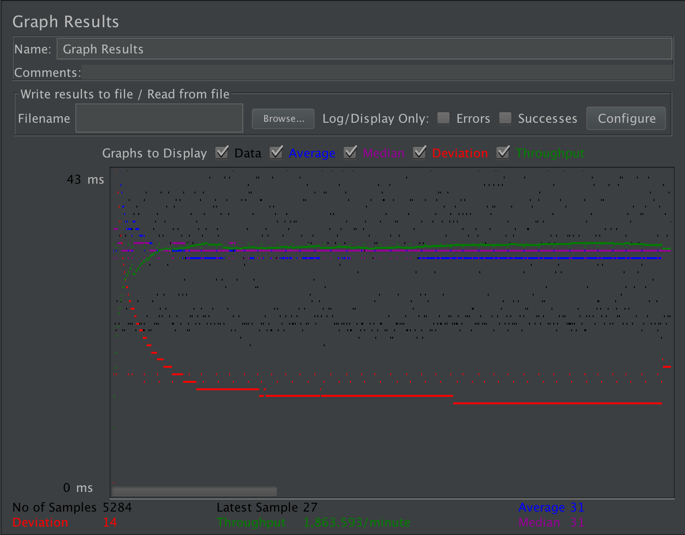
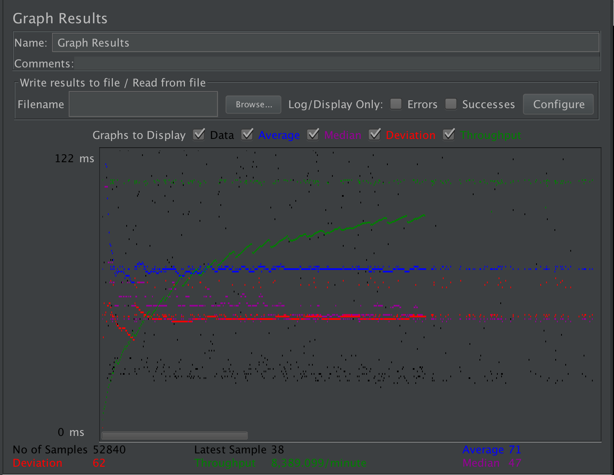
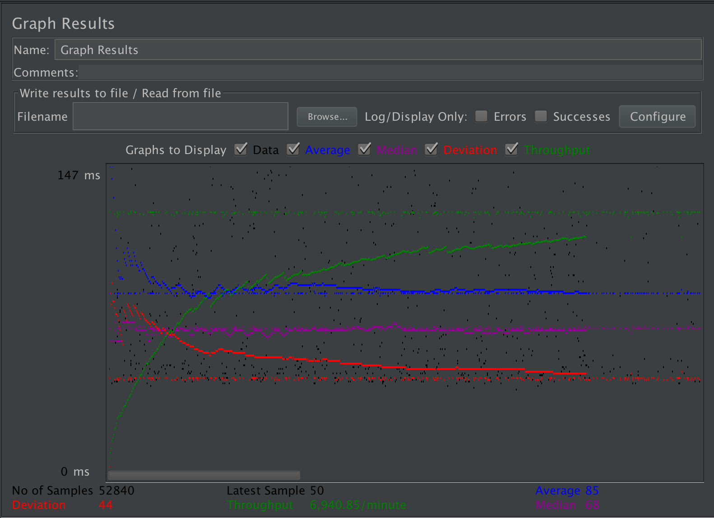
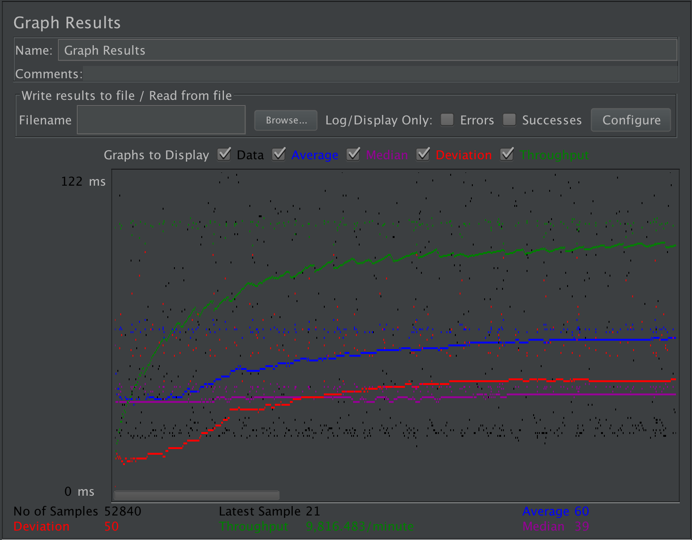
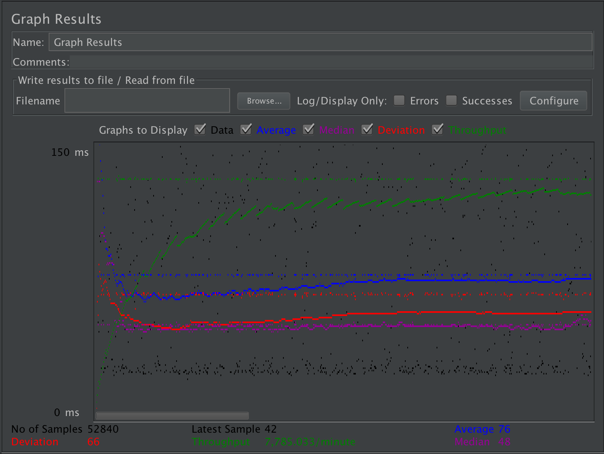
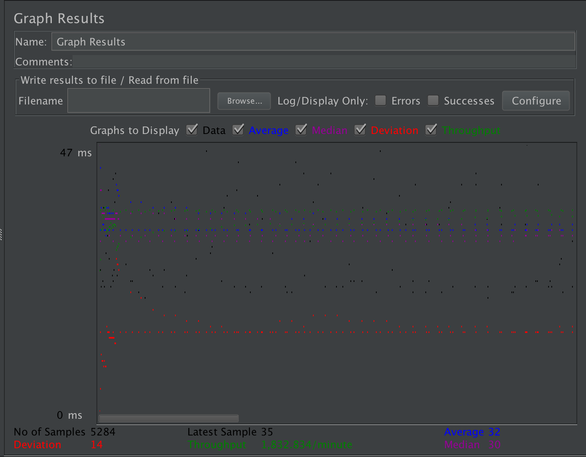
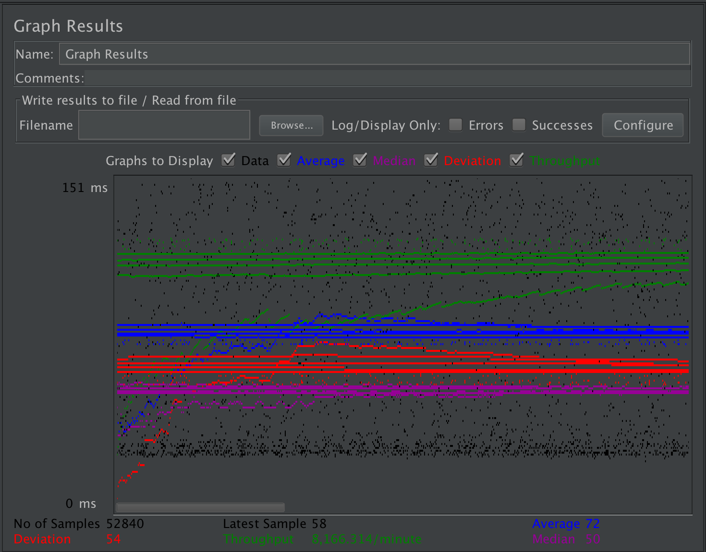
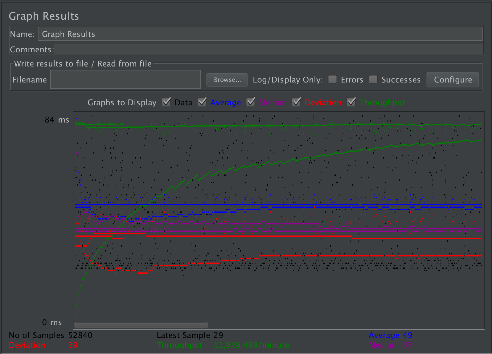
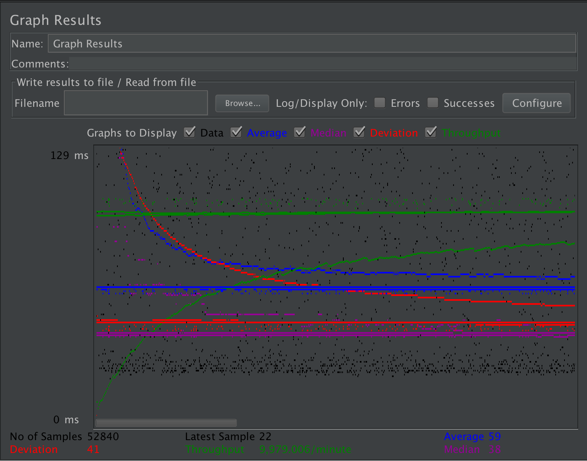

| Single-instance version cases | Graph Results Screenshot | Average Query Time(ms) | Average Search Servlet Time(ms) | Average JDBC Time(ms) | Analysis |
| Case 1: HTTP/1 thread |  | 27ms | 12556325.6067ns | 12301666.1113ns | Total 2642 * 2 requests (both Login and Search servlets but only count the response time for Search), so comparing to HTTP/10 threads, the Tq, TS, TJ is around 10 times smaller |
| Case 2: HTTP/10 threads |  | 68ms | 91236024.5668ns | 90458297.8414ns | Total 2642 * 10 * 2 requests (both Login and Search servlets but only count the response time for Search), so comparing to HTTP/1 threads, the Tq, TS, TJ is around 10 times bigger |
| Case 3: HTTPS/10 threads |  | 89ms | 74437243.332ns | 73491666.1841ns | Comparing to HTTP/10 threads, it takes less time maybe because https is more secure |
| Case 4: HTTP/10 threads/No prepared statements |  | 60ms | 74271855.9613ns | 74271855.9613ns | I am not sure here why without the prepare statement, it takes less time than having both prepare and pooling, maybe it is bacause prepare statement is not working very well with connection pooling |
| Case 5: HTTP/10 threads/No connection pooling |  | 78ms | 105053325.21ns | 104179896.632ns | In this case, no connection pooling taking more time than with connection pooling, so proves that conneciton pooling really save some time when there are many requests |
| Scaled version cases | Graph Results Screenshot | Average Query Time(ms) | Average Search Servlet Time(ms) | Average JDBC Time(ms) | Analysis |
| Case 1: HTTP/1 thread |  | 29ms | 13580061.33535ns | 13043554.39895ns | Total 2642 * 2 requests (both Login and Search servlets but only count the response time for Search), so comparing to HTTP/10 threads, the Tq, TS, TJ is smaller than the HTTP/10 threads |
| Case 2: HTTP/10 threads |  | 70ms | 90595092.9622ns | 88838643.28155ns | Total 2642 * 2 requests (both Login and Search servlets but only count the response time for Search), so comparing to HTTP/1 threads, the Tq, TS, TJ is bigger than the HTTP/1 threads, but maybe because of the scaled http of two instances with load banlancer, 10 thread is less 10 times of 1 thread |
| Case 3: HTTP/10 threads/No prepared statements |  | 59ms | 69690739.8527ns | 70444757.6583ns | Only with connection pooling seems better than having both connection pooling and prepare statemnt, which I am not sure why, it supposed to be taking more time with only connection pooling, maybe it is just because prepare statement is not working very well with connection pooling |
| Case 4: HTTP/10 threads/No connection pooling |  | 49ms | 47159737.14645ns | 46424765.18265ns | In this scaled case, with only prepare statement looks better than having both connection pooling and prepare statemnt, I am not sure why this happens as well, connection pooling will help with not wasting time creating connections and closing connections |